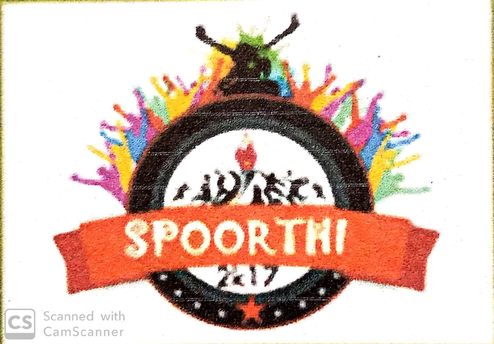
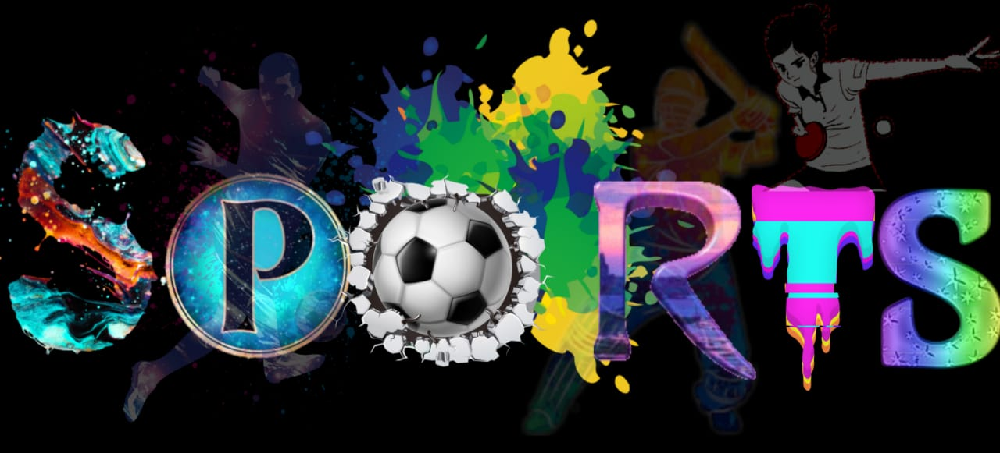

S J M Vidyapeetha®
S J M Institute of Technology ®
(Accredited by the NAAC with 'B++' grade ,Recognized by AICTE,New Delhi and Affiliated to Visveswaraya Technological University,Belagavi)
NH-4 Bypass,PB.no.:73,Chitradurga-577502,Karnataka state
SPOORTHI 2K20

Spoorthi Notice
Dear students kind attention….
Here is the exiting information of the institute festival “Spoorthi 2k20”, the most awaited institute megha festival. As a part of spoorthi festival sports activities have been planned for the forthcoming festival. Hence, all the students are here by informed to make a note and take a part in them positively. For more information students should meet concerned faculty coordinators assigned against each event for further details against the schedule to be declared later.
“SPOORTHI-2K20 sports events will be conducted from 5th to 7th MARCH 2020”
Sports events conducted will be finalized with consent of the students and physical education director. Furthermore, upon discussing with the student sport coordinators the schedule for different sports events will be finalized. The sports events will commence with formal inauguration of the “Spoorthi 2K20 sports”. Hence it is decided to allocate color to each department. In regards to this department wise competition for “Jersy design” is floated. The best jersy design will be awarded with memento and appreciation certificate. This is purely individual competition.
The design of jersy should fulfill:
1.Department theme and name
2.College name
3.College logo
Last date of submission: 24th Feb. 2020 4:00pm, to department of physical education & sports.
Following are some of the mandatory pre-requisites for the department and students:
- A minimum of 30 students participation should be seen from each department including girls & boys to qualify for overall department championship.
- Two active department student coordinators will be identified. Interested students from respective departments should submit their name to respective student coordinator. Respective heads should identify sports coordinator and recommend to PED.
- Heads should forward two faculty and one staff member coordinator for the sports activities based on their interest.
- Students details should be given in the format and submitted to PED.
- Short least students will be called for personal discussion to prove best & the date will be communicated later by PED.
- Decision of the higher authorities will be final based on the information and recommendation.
CC to all departments sports web coordinator, library and office.
-:Rules of different sports:-
Cricket Rules:
- All the rules and regulation are followed as per the International Standards of Cricket.
- Over per match –
1. PQF/ QF/ SF -Maximum 8 overs
2. Final - Maximum 10 overs
- Bowler statistics –
1. PQF/ QF/ SF -Max 2 overs
2. Final - Max 3 overs
- Power play (at the start of each innings only 2fielders outside the restricted circle)-
1. PQF/ QF/ SF -Max 2 overs
2. Final - Max 3 overs
- Free hit for any no ball. Ball is not counted and only run out is considered.
- No LBW &Leg byes.
- No LBW &Leg byes.
- Only Two bounce per over.
- Match tie –super Over
- If detained students are found playing at any stage of the game whole team will be
disqualified from the tournament.
- New ball will be given for each innings.
- Teams should report15 minutes prior to the match schedule to co-ordinator‘s, if not will be eliminated and overruled.
- Team captains should hand over the final list of 11+1 players before toss.
- All the players should be present with their ID at respective venue and schedule.
- Umpire decision is final, no arguments are entertained.
- All the rights of the decision are reserved for PED /chief coordinator’s and staff Co- ordinator’s only.
Final match: - If no result is achieved in a final on the scheduled day of play, the match shall be replayed on the scheduled reserve day, if no result is achieved in the replay on the reserve day, the match shall be declared drawn.
Basic Table Tennis Rules:
- The service must start with the ball in an open palm.
- The ball must be thrown vertically, at least 16 cm.
- The ball must be above and behind the table throughout the serve.
- After throwing the ball, the server must get their free arm and hand out of the way.
Volleyball Rules:
- 6 players on the floor at any one time - 3 in the front row and 3 in the back row.
- Maximum of 3 hits per side.
- Points are made on every serve for wining team of rally (rally-point scoring).
- Player may not hit the ball twice in succession. (A block is not considered a hit)
- Ball may be played off the net during a volley and on a serve.
- A ball hitting a boundary line is in.
- A ball is out if it hits an antennae, the floor completely outside the court, any of the net or cables outside the antennae, the referee stand or pole, the ceiling above a non-playable area.
- It is legal to contact the ball with any part of a player’s body.
- It is illegal to catch, hold or throw the ball.
- A player cannot block or attack a serve from on or inside the 10-foot line.
- After the serve, front-line players may switch positions at the net.
- Matches are made up of sets; the number depends on level of play. 3-set matches are 2 sets to 25 points and a third set to 15. Each set must be won by two points. The winner is the first team to win 2 sets. 5-set matches are 4 sets to 25 points and fifth set to 15. The team must win by 2 unless tournament rules dictate otherwise. The winner is the first team to win three sets.
Rules of Throwball:
- Throwball is played on a court that measures 12.2m x 18.3m with a neutral box at either side of the centre measuring 1.5m.
- A net is placed across the centre of the court at a height of 2.2m.
- Throwball shall be played between two teams, each consisting of twelve players, seven of whom can be active on the pitch at any one time. The remaining five players are substitutes.
- Throwball uses rally scoring in which points can only be scored when serving.
- Matches should be played for the best of three sets, each set’s winner being the first to score 15 points.
- Service is done immediately after the referee's whistle at the start of the game and after a point is scored. It is done from behind the back line towards any area of the opposition’s half.
- Points are lost in Throwball if a team fails to return a serve or throw such as by hitting the net of failing to catch the ball and then throw it back.
- Balls should not be volleyed as in volleyball but should be caught and then thrown quickly. Any ball being released should be done so from on or above the shoulder line only.
- Passes are not allowed in Throwball, as soon as a player receives the ball, they should return it over the net immediately.
- Two players cannot catch the ball simultaneously.
- All players should be appropriately dressed with a team jersey and shorts with their number being printed on the back of the jersey.
Rules of Football (Soccer):
- A match consists of two 45 minutes halves with a 15 minute rest period in between.
- Each team can have a minimum off 11 players (including 1 goalkeeper who is the only player allowed to handle the ball within the 18 yard box) and a minimum of 7 players are needed to constitute a match.
- The field must be made of either artificial or natural grass. The size of pitches is allowed to vary but must be within 100-130 yards long and 50-100 yards wide. The pitch must also be marked with a rectangular shape around the outside showing out of bounds, two six yard boxes, two 18 yard boxes and a centre circle. A spot for a penalty placed 12 yards out of both goals and centre circle must also be visible.
- The ball must have a circumference of 58-61cm and be of a circular shape.
- Each team can name up to 7 substitute players. Substitutions can be made at any time of the match with each team being able to make a maximum of 3 substitutions per side. In the event of all three substitutes being made and a player having to leave the field for injury the team will be forced to play without a replacement for that player.
- Each game must include one referee and two assistant referee’s (linesmen). It’s the job of the referee to act as time keeper and make any decisions which may need to be made such as fouls, free kicks, throw ins, penalties and added on time at the end of each half. The referee may consult the assistant referees at any time in the match regarding a decision. It’s the assistant referee’s job to spot offside’s in the match (see below), throw ins for either team and also assist the referee in all decision making processes where appropriate.
- If the game needs to head to extra time as a result of both teams being level in a match then 30 minutes will be added in the form of two 15 minute halves after the allotted 90 minutes.
- If teams are still level after extra time then a penalty shootout must take place.
- The whole ball must cross the goal line for it to constitute as a goal.
- For fouls committed a player could receive either a yellow or red card depending on the severity of the foul; this comes down to the referee’s discretion. The yellow is a warning and a red card is a dismissal of that player. Two yellow cards will equal one red. Once a player is sent off then they cannot be replaced.
- If a ball goes out of play off an opponent in either of the side lines then it is given as a throw in. If it goes out of play off an attacking player on the base line then it is a goal kick. If it comes off a defending player it is a corner kick.
Rules of chess and carrom will be announced on sports day.
(Schedules of all the sports will be updated shortly)
Designed by
Vishnu P
Rohith Sabar
Pavan Kumar Naik N T
Skanda Sai M
Contact us:
vishnuprasadcta@gmail.com